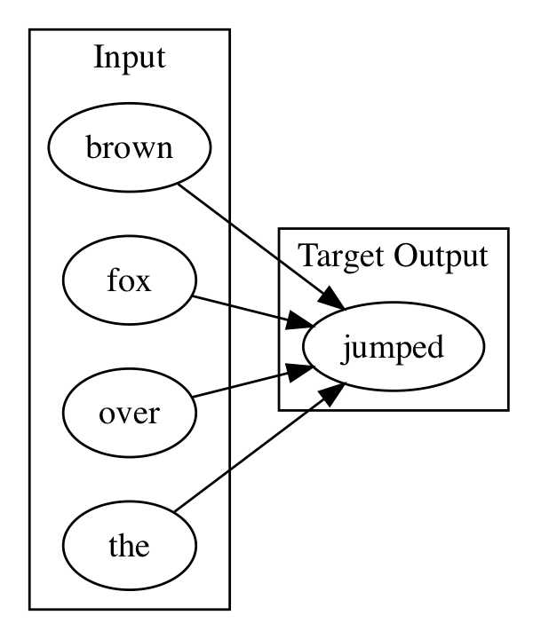

Data Ingestion Case Study: Text
Table of Contents
- PreProcessing and tokenization
- Bag of Words
- N-Grams
- Word2Vec
- Paragraph Vectors
- GloVE
- Words as Sequence of Characters
Table of Contents
- ⇒ PreProcessing and tokenization
- Bag of Words
- N-Grams
- Word2Vec
- Paragraph Vectors
- GloVE
- Words as Sequence of Characters
PreProcessing and tokenization
- Tokenizer
- Splits stream of words into individual words
- DefaultTokenizer
- NGramTokenizer
- PosUimaTokenizer
- UimaTokenizer
- Splits stream of words into individual words
- PreProcessors
- LowCasePreProcessor
- StemmingPreprocessor
- PreProcessing and tokenization
- ⇒ Bag of Words
- N-Grams
- Word2Vec
- Paragraph Vectors
- GloVE
- Words as Sequence of Characters
Bag of Words
Corpus is represented as the bag(multiset) of its words.
- No Grammar
- No order
- Frequency only
"Bob and Carol and Ted and Alice"
Becomes the List ["Bob","and","Carol","Ted","Alice"]
Term frequency [1,3,1,1,1]
Bag of Words uses
- TfIDF
- Frequency of word/document compared to word/corpus of documents
Bag of Words Example
- Lab Folder has example
- Tokenizer to read files from directory and label with filename
TokenizerFactory tokenizerFactory = new DefaultTokenizerFactory();
LabelAwareIterator iterator = new FilenamesLabelAwareIterator.Builder()
.addSourceFolder(new ClassPathResource("bow").getFile())
.useAbsolutePathAsLabel(false)
.build();
Bag of Words Example continued
- Code to show contents of iterator
while(iterator.hasNext()){
LabelledDocument doc = iterator.nextDocument();
System.out.println(doc.getContent());
System.out.println(doc.getLabels().get(0));
}
iterator.reset();
Bag of Words Example Continued
BagOfWordsVectorizer vectorizer = new BagOfWordsVectorizer.Builder()
.setMinWordFrequency(1)
.setStopWords(new ArrayList<String>())
.setTokenizerFactory(tokenizerFactory)
.setIterator(iterator)
.build();
vectorizer.fit();
Bag of Words Example Continued
- Code to explore the contents of the Bag of Words
log.info(vectorizer.getVocabCache().tokens().toString());
System.out.println(vectorizer.getVocabCache().totalNumberOfDocs());
System.out.println(vectorizer.getVocabCache().docAppearedIn("two."));
System.out.println(vectorizer.getVocabCache().docAppearedIn("one."));
System.out.println(vectorizer.getVocabCache().docAppearedIn("world"));
- PreProcessing and tokenization
- Bag of Words
- ⇒ N-Grams
- Word2Vec
- Paragraph Vectors
- GloVE
- Words as Sequence of Characters
NGrams
- Contiguous sequence of n items from a sequence of text
Example "It is the year 2016"
Bi-grams "It is" "is the" "the year" "year 2016" Tri-grams "It is the" "is the year" "the year 2016"
NGram uses
- Provide more context than Bag of Words
- Used in some Neural Net for Speech Recognition to narrow the scope of prediction
- RNN predicts next word out of top x percent of trigram for previous 2 word predictions
NGram code Example
public static void main(String[] args) throws Exception{
String toTokenize = "To boldly go where no one has gone before.";
TokenizerFactory factory = new NGramTokenizerFactory(new DefaultTokenizerFactory(), 1, 2);
Tokenizer tokenizer = factory.create(toTokenize);
factory = new NGramTokenizerFactory(new DefaultTokenizerFactory(), 2, 3);
List<String> tokens = factory.create(toTokenize).getTokens();
log.info(tokens.toString());
Output
[To, boldly], [boldly, go], [go, where],......
[To, boldly, go], [boldly, go, where] ......
- PreProcessing and tokenization
- Bag of Words
- N-Grams
- ⇒ Word2Vec
- Paragraph Vectors
- GloVE
- Words as Sequence of Characters
Word2Vec
- Model for word embeddings
- Vector Space
- Each word in Corpus => Vector in Vector Space
- Relative location of word in vector space denotes relationship
- Boy->Man Girl->Woman
Word2Vec
- Model for word embeddings
- Vector Space
- Each word in Corpus => Vector in Vector Space
Word2Vec - Generating the Vector Space
- Neural Network trained to return word probabilities of a moving window
- Given word "Paris", out of the corpus of words predict probility of each word occuring within say 5 words of the word "Paris"
- One hot Vector, size of every word in the corpus
- all 0's except for 1 representing the word
- See Demo https://ronxin.github.io/wevi/
- See example in intellij
- ALlows you to do word math
- King - Man + Woman = (?) Queen
One-hot encoding
- Vector, the size of the vocabulary, all 0's except for 1

Two Methods for building word2vec
- CBOW
- w1,w2,w4,w5 as input to Neural Net
- Context words
- Train net with w3 as target
- Focus word
- w1,w2,w4,w5 as input to Neural Net
- SKIP GRAM
- Reverse of CBOW
- Input is Focus word
- Output is Context Words
CBOW visually

CBOW visually

CBOW visually

CBOW visually

- PreProcessing and tokenization
- Bag of Words
- N-Grams
- Word2Vec
- ⇒ Paragraph Vectors
- GloVE
- Words as Sequence of Characters
Paragraph Vectors
- Need Something here
- PreProcessing and tokenization
- Bag of Words
- N-Grams
- Word2Vec
- Paragraph Vectors
- ⇒ GloVE
- Words as Sequence of Characters
GloVE
- Vector Representation
- word-word co-occurence algorithm for generating vector
- PreProcessing and tokenization
- Bag of Words
- N-Grams
- Word2Vec
- Paragraph Vectors
- GloVE
- ⇒ Words as Sequence of Characters
Text as Sequence of Characters
Text can be treated as sequence of characters, and neural network can be trained to answer the question. Given input character X predict the next character, and repeat.
Why choose character as unit of analysis vs word?
- How many words are there?
- How many characters are there?
- Text->word processing is hard
- prefix, suffix, etc
- "old school" , "New York"
SubTree in tree of all character strings
Graph of test branch teste, testi, branch tested, branch testing
In an RNN each node is a hidden state vector.
Using Recurrent Neural Networks to write weather forecast
After the content that describes LSTM RNN in detail we will have a lab that builds a neural network to generate characters one character at a time from a learned corpus.
In the lab we will train the network weather forecasts.